神经网络基础
最近AI挺火的，重新开始学习一下神经网络并且整理一些东西，简单写点笔记记录一下。
神经网络是一种模仿生物神经系统结构和功能的计算模型，主要用于机器学习和人工智能领域。它由大量相互连接的节点（称为“神经元”）组成，这些节点通过加权连接传递信息。神经网络的核心思想是通过调整这些连接的权重来学习数据中的模式。
主要组成部分
- 输入层：接收外部输入数据。
- 隐藏层：位于输入层和输出层之间，负责处理数据。可以有多个隐藏层。
- 输出层：生成最终的输出结果。
工作原理
- 前向传播：输入数据通过各层传递，每层对数据进行加权和激活函数处理，最终生成输出。
- 激活函数：引入非线性，使网络能够学习复杂模式，常用函数包括ReLU、Sigmoid和Tanh。
- 损失函数：衡量预测结果与实际结果的差距。
- 反向传播：通过梯度下降法调整权重，最小化损失函数。
- 优化算法：如SGD、Adam，用于更新权重。
主要类型
- 前馈神经网络（FNN）：信息单向传递，无循环。
- 卷积神经网络（CNN）：适用于图像处理，通过卷积层提取特征。
- 循环神经网络（RNN）：处理序列数据，具有记忆功能。
- 长短期记忆网络（LSTM）：RNN的改进，解决长序列依赖问题。
- 生成对抗网络（GAN）：由生成器和判别器组成，用于生成数据。
网上搜了些文章资料，大致总结出的学习内容，数学基础：了解线性代数、微积分和概率论，特别是矩阵运算、导数和梯度等概念。编程基础：熟悉Python，掌握NumPy、Pandas等数据处理库。
神经网络中的数学基础
1. 线性代数
- 向量：一维数组，可以表示输入数据或权重。
- 矩阵：二维数组，常用于表示权重矩阵或输入数据。
例子： 假设有一个简单的神经网络，输入层有2个神经元，隐藏层有3个神经元。输入数据可以表示为一个向量：
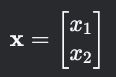 隐藏层的权重可以表示为一个矩阵：
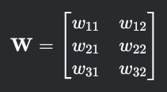
矩阵乘法
矩阵乘法用于前向传播中计算神经元的加权输入。
例子： 计算隐藏层的输入：
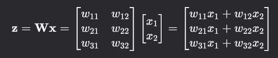
2. 微积分
导数
导数用于计算损失函数对权重的梯度。
例子： 假设损失函数为均方误差（MSE）：
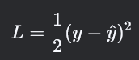 其中，y^是预测值，y是真实值。损失函数对预测值的导数为：
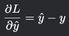
链式法则
链式法则用于反向传播中计算梯度。
例子： 假设有一个简单的神经网络，隐藏层的输出为 z，激活函数为 a=σ(z)，损失函数为 L。根据链式法则，损失函数对权重的导数为：
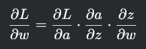
3. 概率与统计
概率分布
理解数据分布有助于设计损失函数和评估模型。
例子： 假设我们有一个二分类问题，输出层的激活函数为Sigmoid函数，输出值可以解释为概率：
P(y=1∣x)=σ(z)P(y=1∣x)=σ(z)
最大似然估计
最大似然估计用于定义损失函数。
例子： 对于二分类问题，常用的损失函数为交叉熵损失：
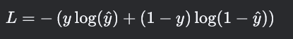
4. 优化
梯度下降
梯度下降通过计算损失函数的梯度并更新权重来最小化损失。
例子： 假设损失函数对权重的梯度为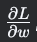，学习率为 η，则权重的更新公式为：
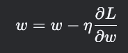
随机梯度下降（SGD）
随机梯度下降每次更新使用一个样本或小批量样本。
例子： 假设我们有一个小批量样本，损失函数对权重的梯度为 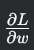，学习率为 ηη，则权重的更新公式为：
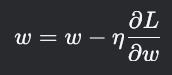
5. 激活函数
Sigmoid
Sigmoid函数将输入映射到(0,1)区间。
例子：
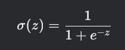
ReLU
ReLU函数简单且常用。
例子：
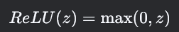
6. 损失函数
均方误差（MSE）
均方误差用于回归问题。
例子：
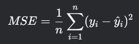
交叉熵损失
交叉熵损失用于分类问题。
例子：
7. 反向传播
链式法则
链式法则用于计算损失函数对每个权重的梯度。
例子： 假设有一个简单的神经网络，隐藏层的输出为 zz，激活函数为 a=σ(z)a=σ(z)，损失函数为 LL。根据链式法则，损失函数对权重的导数为：
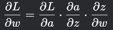
8. 正则化
L2正则化
L2正则化通过在损失函数中加入权重平方和防止过拟合。
例子：
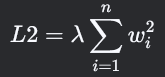
Dropout
Dropout在训练时随机丢弃部分神经元，防止过拟合。
例子： 在训练时，每个神经元以概率 pp 被丢弃，以概率 1−p1−p 被保留。
Numpy和Pandas
NumPy (Numerical Python) 是一个用于科学计算的库，提供了多维数组对象（ndarray）以及丰富的数组运算功能。它在数值计算和数据处理方面非常高效。
基本操作如下：
import numpy as np
# 创建数组
array = np.array([1, 2, 3, 4]) # 一维数组
matrix = np.array([[1, 2], [3, 4]]) # 二维数组
# 数组属性
print(array.shape) # 查看数组形状
print(array.ndim) # 查看数组维度
print(array.dtype) # 查看数据类型
# 常用操作
zeros = np.zeros((2, 3)) # 创建全零数组
ones = np.ones((2, 3)) # 创建全一数组
arange = np.arange(0, 10, 2) # 创建等差序列
linspace = np.linspace(0, 1, 5) # 创建线性等分点
# 数学运算
array = np.array([1, 2, 3])
print(array + 10) # 数组加法（广播机制）
print(array * 2) # 数组乘法
print(np.mean(array)) # 平均值
print(np.sum(array)) # 求和
print(np.dot(array, array)) # 点积
# 数组索引和切片
print(array[1]) # 索引第2个元素
print(matrix[:, 1]) # 切片：取二维数组每行的第2列
Pandas 是一个用于数据操作和分析的库，提供了强大的数据结构 Series 和 DataFrame，专门处理表格和时间序列数据。
import pandas as pd
# 创建 Series
series = pd.Series([10, 20, 30], index=['a', 'b', 'c']) # 一维数据
print(series['a']) # 按索引取值
# 创建 DataFrame
data = {'Name': ['Alice', 'Bob', 'Charlie'], 'Age': [25, 30, 35], 'Score': [85, 90, 95]}
df = pd.DataFrame(data) # 二维表格数据
print(df)
# 查看数据
print(df.head()) # 查看前5行
print(df.info()) # 查看数据概要
print(df.describe()) # 查看统计信息
# 数据选择
print(df['Name']) # 按列选择
print(df.iloc[0]) # 按行索引选择
print(df.loc[0, 'Name']) # 按行列标签选择
# 数据筛选
print(df[df['Age'] > 25]) # 筛选 Age 大于 25 的行
# 数据处理
df['Age'] = df['Age'] + 1 # 修改列数据
df['New_Column'] = df['Score'] / 10 # 添加新列
# 处理缺失值
df['Score'] = [85, None, 95]
print(df.dropna()) # 删除缺失值行
print(df.fillna(0)) # 用 0 填充缺失值
# 排序
print(df.sort_values(by='Age', ascending=False)) # 按 Age 列降序排列
NumPy 的多维数组
NumPy 的核心数据结构是 ndarray，它支持多维数组操作。
创建多维数组
python
import numpy as np
# 创建二维数组
matrix = np.array([[1, 2, 3], [4, 5, 6]])
# 查看属性
print(matrix.shape) # (2, 3)，表示2行3列
print(matrix.ndim) # 2，表示二维数组
print(matrix.size) # 6，总元素数量
print(matrix.dtype) # 元素类型（如int32, float64等）
数组的重塑（reshape）
python
# 重塑数组
original = np.array([1, 2, 3, 4, 5, 6])
reshaped = original.reshape(2, 3) # 转为2行3列
print(reshaped)
数组的广播机制
NumPy 支持不同形状数组进行运算，这被称为“广播”：
python
a = np.array([[1, 2], [3, 4]])
b = np.array([10, 20])
print(a + b) # 自动将 b 复制到每一行，进行加法
NumPy 的常用数学运算
NumPy 提供了高效的数学运算功能，适用于向量、矩阵操作。
python
# 数学函数
array = np.array([1, 2, 3, 4])
print(np.sum(array)) # 求和
print(np.mean(array)) # 平均值
print(np.min(array)) # 最小值
print(np.max(array)) # 最大值
print(np.sqrt(array)) # 平方根
# 矩阵乘法（点积）
a = np.array([[1, 2], [3, 4]])
b = np.array([[5, 6], [7, 8]])
print(np.dot(a, b)) # 矩阵乘法
NumPy 的索引和切片
NumPy 支持灵活的数组切片和索引：
python
array = np.array([[1, 2, 3], [4, 5, 6], [7, 8, 9]])
# 单元素索引
print(array[1, 2]) # 输出6，取第2行第3列
# 切片
print(array[0:2, 1:3]) # 取前两行的第2列到第3列
NumPy 和 Pandas 的主要区别
| 特性 | NumPy | Pandas |
|---|---|---|
| 数据结构 | 多维数组（ndarray） |
一维 Series 和二维 DataFrame |
| 数据类型 | 适合数值运算 | 可处理数值、字符串、时间序列等多样数据 |
| 应用场景 | 数学计算、线性代数、矩阵操作 | 数据清洗、分析、处理表格数据 |
| 操作简便性 | 较低（需要手动维护行列索引） | 较高（内置丰富的操作方法） |
Series 数据结构
Series 是一种类似于一维数组的结构，带有索引。
创建 Series
python
import pandas as pd
# 创建 Series
s = pd.Series([10, 20, 30, 40], index=['a', 'b', 'c', 'd'])
print(s)
# 索引操作
print(s['a']) # 按标签索引
print(s[1]) # 按位置索引
# 数学运算
print(s + 10) # 每个元素加10
DataFrame 数据结构
DataFrame 是一种二维表格数据结构，类似于 Excel 表。
创建 DataFrame
# 创建 DataFrame
data = {
'Name': ['Alice', 'Bob', 'Charlie'],
'Age': [25, 30, 35],
'Score': [85, 90, 95]
}
df = pd.DataFrame(data)
print(df)
查看和操作数据
# 查看数据
print(df.head()) # 查看前5行
print(df.info()) # 查看数据概要
print(df.describe()) # 查看统计信息
# 修改数据
df['Age'] = df['Age'] + 1 # 修改 Age 列的值
df['New_Column'] = df['Score'] / 10 # 添加新列
print(df)
数据筛选
Pandas 提供了直观的数据筛选功能，支持按条件过滤数据：
# 筛选 Age 大于 30 的行
filtered_df = df[df['Age'] > 30]
print(filtered_df)
# 多条件筛选
filtered_df = df[(df['Age'] > 30) & (df['Score'] > 90)]
print(filtered_df)
缺失值处理
数据中常常包含缺失值，Pandas 提供了多种处理方法：
# 创建包含缺失值的数据
data = {'Name': ['Alice', 'Bob', 'Charlie'], 'Age': [25, None, 35], 'Score': [85, 90, None]}
df = pd.DataFrame(data)
# 检测缺失值
print(df.isnull()) # 返回布尔值矩阵
print(df.isnull().sum()) # 每列缺失值数量
# 删除缺失值
print(df.dropna()) # 删除包含缺失值的行
# 填充缺失值
df_filled = df.fillna(0) # 用0填充
print(df_filled)
数据排序
Pandas 提供了灵活的数据排序功能：
# 按 Age 列降序排序
sorted_df = df.sort_values(by='Age', ascending=False)
print(sorted_df)
以下为一个基础示例，这个简单示例用于解决XOR问题
import numpy as np
# 定义Sigmoid激活函数及其导数
def sigmoid(x):
return 1 / (1 + np.exp(-x))
def sigmoid_derivative(x):
return x * (1 - x)
# 定义神经网络类
class NeuralNetwork:
def __init__(self, input_size, output_size):
# 初始化权重和偏置
self.weights = np.random.rand(input_size, output_size)
self.bias = np.random.rand(1, output_size)
def feedforward(self, X):
# 前向传播
self.z = np.dot(X, self.weights) + self.bias
self.a = sigmoid(self.z)
return self.a
def backpropagation(self, X, y, output, learning_rate):
# 反向传播
error = y - output
d_output = error * sigmoid_derivative(output)
d_weights = np.dot(X.T, d_output)
d_bias = np.sum(d_output, axis=0, keepdims=True)
# 更新权重和偏置
self.weights += learning_rate * d_weights
self.bias += learning_rate * d_bias
def train(self, X, y, epochs, learning_rate):
for epoch in range(epochs):
output = self.feedforward(X)
self.backpropagation(X, y, output, learning_rate)
if epoch % 1000 == 0:
loss = np.mean(np.square(y - output))
print(f"Epoch {epoch}, Loss: {loss}")
# 示例数据
X = np.array([[0, 0], [0, 1], [1, 0], [1, 1]])
y = np.array([[0], [1], [1], [0]])
# 创建神经网络实例
input_size = 2
output_size = 1
nn = NeuralNetwork(input_size, output_size)
# 训练神经网络
epochs = 10000
learning_rate = 0.1
nn.train(X, y, epochs, learning_rate)
# 测试神经网络
test_data = np.array([[0, 0], [0, 1], [1, 0], [1, 1]])
predictions = nn.feedforward(test_data)
print("Predictions:")
print(predictions)
其中主要有以下几个部分：
- Sigmoid激活函数及其导数：
sigmoid(x)：将输入映射到(0,1)区间。sigmoid_derivative(x)：计算Sigmoid函数的导数，用于反向传播。
- 神经网络类：
__init__：初始化权重和偏置，随机生成初始值。feedforward：前向传播，计算输出。backpropagation：反向传播，计算梯度并更新权重和偏置。train：训练神经网络，迭代多次进行前向传播和反向传播。
- 示例数据：
X：输入数据，表示逻辑门的输入。y：目标输出，表示逻辑门的输出。
- 创建神经网络实例：
input_size：输入层的大小。output_size：输出层的大小。
- 训练神经网络：
epochs：训练次数。learning_rate：学习率，控制每次更新的步长。
- 测试神经网络：
test_data：测试数据，与训练数据相同。predictions：神经网络的预测输出。
运行代码后，每个epoch的损失值逐渐减小，最终输出的预测值接近目标值。这个简单的神经网络模型可以解决XOR问题，尽管它是一个单层感知机，但通过训练可以学习到正确的权重和偏置。最终执行后的结果如下：
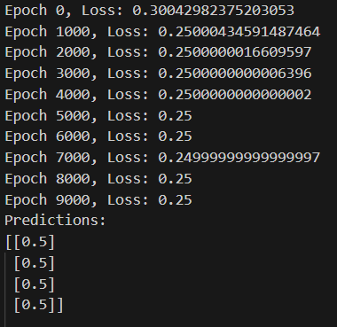